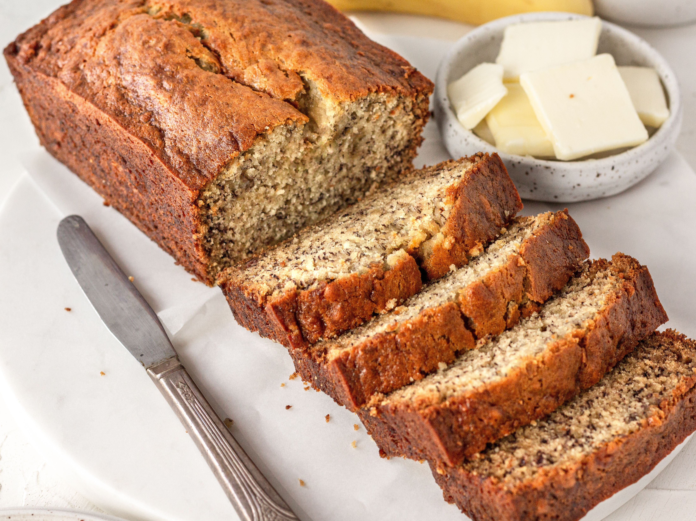

Boozy Banana Bread

A quick bread made with mashed ripe bananas mixed into the batter with a touch of amaretto
- Prep: 15 mins
- Cook: 1 hr
- Additional: 30 mins
- Total: 1 hr 45 mins
- Servings: 8
- Yield: 1 loaf
Ingredients
- cooking spray
- 2 cups all-purpose flour, sifted
- 1 teaspoon salt
- 1 teaspoon baking soda
- 5 very ripe bananas, mashed
- ¾ cup brown sugar
- ½ cup butter, softened
- 2 eggs
- 3 drops almond extract
- 3 drops amaretto (almond-flavored liqueur)
Directions
- Preheat oven to 350 degrees F (175 degrees C). Spray a loaf pan with cooking spray.
- Whisk flour, salt, and baking soda together in a bowl.
- Mix bananas, brown sugar, butter, eggs, almond extract, and amaretto together in a separate bowl. Add flour mixture; mix just until flour is incorporated, about 1 minute. Transfer mixture to the prepared loaf pan.
- Bake in the preheated oven until a toothpick inserted into the center comes out clean, about 1 hour. Let cool before serving, about 30 minutes.